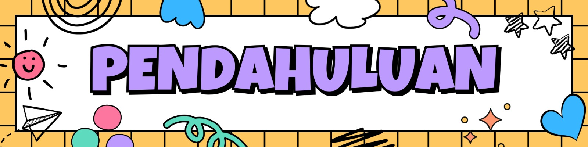

Latar Belakang
Kemampuan numerasi merupakan salah satu kompetensi fundamental yang perlu dimiliki setiap murid untuk dapat berpikir logis, kritis, dan memecahkan masalah dalam kehidupan sehari-hari. Bagi murid di Sekolah Luar Biasa (SLB), penguatan numerasi menjadi lebih bermakna karena berkaitan langsung dengan pengembangan kemandirian, kemampuan beradaptasi, dan partisipasi aktif dalam kehidupan sosial. Namun, proses pengembangan numerasi di SLB sering menghadapi tantangan, baik dari segi karakteristik peserta didik yang beragam maupun keterbatasan sumber dan media belajar yang sesuai. Oleh karena itu, guru perlu memiliki kemampuan merancang pembelajaran yang tidak hanya berorientasi pada hasil, tetapi juga menekankan proses berpikir dan pemaknaan konsep — atau yang disebut pembelajaran mendalam (deep learning).
Pembelajaran mendalam mendorong muriduntuk memahami makna di balik konsep, menghubungkan pengetahuan dengan konteks kehidupan nyata, dan mengembangkan keterampilan berpikir tingkat tinggi. Pendekatan ini sejalan dengan kebijakan Keputusan Menteri Pendidikan Dasar dan Menengah Nomor 126 Tahun 2025 tentang Pedoman Implementasi Pembelajaran Mendalam pada PAUD, Dikdas, dan Dikmen, serta gerakan nasional penguatan literasi dan numerasi.
Melalui Modul 2, guru SLB diharapkan mampu memahami konsep numerasi yang relevan bagi murid berkebutuhan khusus, menerapkan strategi pembelajaran mendalam, dan merancang pembelajaran berbasis numerasi yang kontekstual, adaptif, dan bermakna. Dengan demikian, pembelajaran numerasi di SLB tidak lagi hanya tentang menghitung angka, tetapi juga tentang membangun cara berpikir dan keterampilan hidup yang memberdayakan murid.
Tujuan Pembelajaran
Setelah mengikuti seluruh kegiatan dalam modul ini, peserta diharapkan mampu:
- Menjelaskan konsep numerasi dalam konteks pendidikan di SLB;
- Mengidentifikasi strategi pembelajaran mendalam yang relevan dengan pengembangan kemampuan numerasi;
- Merancang rancangan pembelajaran berbasis numerasi yang adaptif, kontekstual, dan bermakna bagi peserta didik SLB;
- Menggunakan media dan sumber belajar yang mendukung ketercapaian kompetensi numerasi di SLB; serta
- Melakukan refleksi terhadap rancangan pembelajaran numerasi yang telah disusun untuk perbaikan ke depan.
Deskripsi Singkat Materi
Modul 2 membimbing guru SLB untuk memahami dan mengimplementasikan konsep numerasi dalam pembelajaran yang bermakna dan mendalam. Peserta akan mempelajari hakikat numerasi di SLB, menerapkan prinsip pembelajaran mendalam yang menumbuhkan kemampuan berpikir tingkat tinggi, serta merancang pembelajaran berbasis numerasi yang kontekstual dan sesuai dengan karakteristik murid berkebutuhan khusus.
Topik, Kegiatan dan Alokasi Waktu
Topik, kegiatan dan alokasi waktu untuk mempelajari e-modul Perancangan Pembelajaran Mendalam Berbasis Numerasi di Sekolah Luar Biasa (SLB) dijelaskan dalam tabel di bawah ini.
|
Kegiatan |
Komponen |
Uraian |
| Kegiatan Belajar 1. Konsep Numerasi dalam Konteks Pendidikan di SLB |
Topik | Pemahaman Konsep Numerasi Fungsional di SLB |
| Subtopik |
|
|
| Kegiatan Pembelajaran |
|
|
| Alokasi Waktu | 6 JP (270 menit) | |
| Kegiatan Belajar 2. Prinsip dan Strategi Pembelajaran Mendalam Berbasis Numerasi di SLB | Topik | Penerapan Pembelajaran Mendalam dalam Pengembangan Numerasi |
| Subtopik |
|
|
| Kegiatan Pembelajaran |
|
|
| Alokasi Waktu | 8 JP (360 menit) | |
| Kegiatan Belajar 3. Perancangan Pembelajaran Mendalam Berbasis Numerasi di SLB | Topik | Pengembangan Rancangan Pembelajaran Numerasi yang Adaptif dan Bermakna |
| Subtopik |
|
|
| Kegiatan Pembelajaran |
|
|
| Alokasi Waktu | 8 JP (360 menit) | |
| Total | 22 JP (990 menit) |